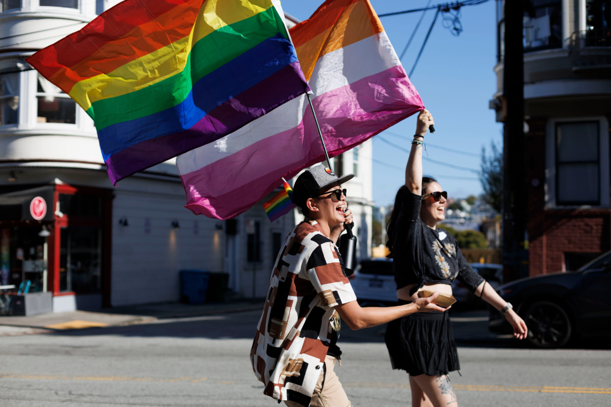

The first known lesbian bar in the U.S is Mona's 440 Club in San Francisco, opening in 1936. While not originally opened as a lesbian bar, it was known for its largely female clientele and staff. This establishment was open to artists, writers, and deviants and showed performances nightly. The bar eventually changed ownership and shifted its focus to the performance aspect rather than the LGBT+ community.

World War II marked a point in history where Women were given more freedom in self-expression. Due to women finally being able to enlist in the military alongside the Women’s Army Corps (WAC), women were rapidly gaining new levels of independence. This independence came with being able to dress more freely and masculinity if so desired. This freedom prevailed after the war allowing women to go to establishments freely without a male escort present.


In the 1940s however, any sign of homosexuality was seen as disorderly conduct. This resulted in bars being put in a position to cultivate a save space for patrons while also limiting the extent to how free they could be. It took up until 2003 for all homosexuality to be legalized across the U.S and Lesbian bars fought for both LGBT+ rights as well as women's rights until then. The 1960s were a time where police raids would come to these establishments to enforce the status quo. Women had to wear three articles of female clothing, couldn’t dance with another woman, and could even be harassed for just being in a public space that served alcohol.

Lesbian bars stand at its core as a feminist piece. The entire concept of a lesbian bar was illegal for many decades in the U.S, not just due to the queer label but also due to the female label. Throughout time a bar that cultivates lesbians as its target audience has struggled to be financially viable. The wage gap between women and men, alongside a decline in patronage has made it difficult for businesses to stay afloat. The rise of online dating has also decreased the need for a physical save place to go to. Many bars of this nature today have re branded to just queer bars instead, welcoming all members in the LGBT+ community which is wonderful for business.
